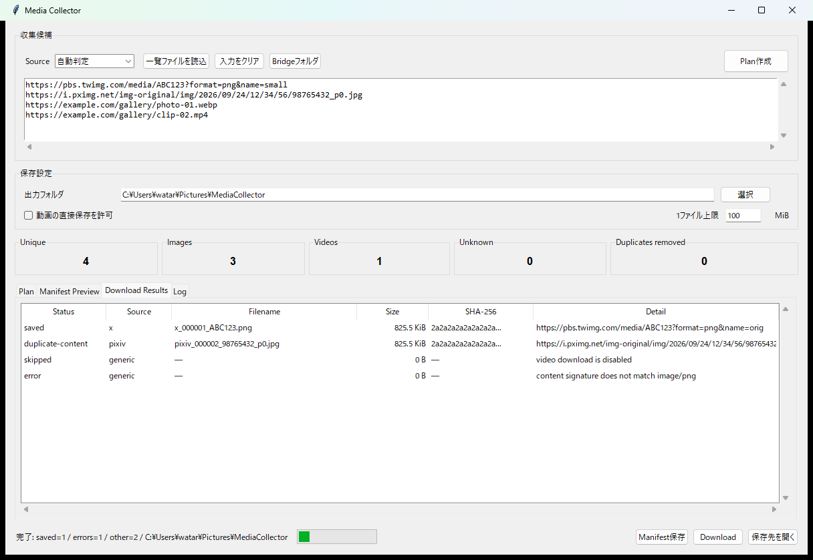

Plan-first workflow
ネットワーク保存を始める前に、URLの正規化結果、画像・動画種別、重複数を一覧で確認できます。
Python / Desktop / Media Workflow
v0.4.0 RC

以前使っていた複数の画像・メディア収集スクリプトを、安全な共通ワークフローへ作り直しました。URLを貼ってPlanを確認し、正規化・重複排除・manifest生成を行ったうえで、必要な場合だけ保存処理を実行します。
ネットワーク保存を始める前に、URLの正規化結果、画像・動画種別、重複数を一覧で確認できます。
X、Pixiv、Generic URLを共通形式へ変換します。Browser Bridgeは現在のページに見えているメディアURLだけを抽出します。
Content-Typeとファイルシグネチャを確認し、容量上限、動画既定OFF、SHA-256重複排除を通して保存します。
Planと保存結果をJSON / TSVで出力します。tokenやsignature系のクエリ値は記録時にREDACTEDへ置換します。
Windows向けソースリリースです。Python 3.10以上とTkinterを使用し、追加のPythonパッケージは不要です。